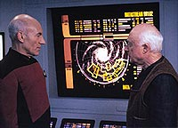
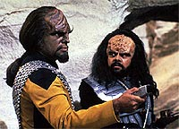
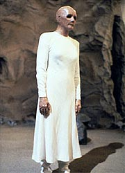
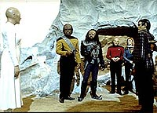
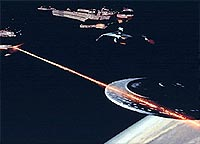

|
MANCHETE
DO EPISÓDIO
Raças
se unem para a maior descoberta
arqueológica da história da galáxia
Episódio
anterior | Próximo
episódio
Sinopse:
Data Estelar: 46731.5.
Picard fica surpreso quando o professor Richard Galen, um velho
mestre de arqueologia que ele não vê há 30 anos, lhe faz uma
visita a bordo da Enterprise. O capitão fica ainda mais surpreso
quando Galen pede a ele que o acompanhe em uma missão.
O renomado arqueólogo fez uma descoberta tão profunda que suas
implicações poderiam ressoar por toda a galáxia. Mas ele só a
revelará a Picard se ele concordar em seguir com ele em uma longa
expedição, que terá possivelmente um ano de duração.
 A
oferta é tentadora para o capitão, que uma vez já quis tornar-se
um arqueólogo, mas ele opta pelo dever, fazendo com que o professor
saia furioso da Enterprise. Alguns instantes depois, a Enterprise
recebe um pedido de socorro -- a nave de Galen está sob ataque de
Yridianos.
Após inadvertidamente destruir a nave com um disparo de feiser, a
tripulação consegue trazer Galen a bordo, mas não antes que ele
tomasse um tiro de disruptor no peito, à queima-roupa. Picard está
ao lado do professor quando ele morre na enfermaria, levando seu
segredo com ele para o túmulo.
Tentando descobrir por que Galen foi atacado, a tripulação
encontra 19 estranhos blocos de números armazenados na memória do
computador. Picard decide que resposta pode estar em Ruah IV, parte
de um sistema solar inexplorado que Galen havia visitado antes de
contatar a Enterprise. Ele ordena que a nave vá para lá, mesmo
sabendo que isso atrasará a chegada da Enterprise em uma conferência
diplomática. Quando a busca não resulta em nada, ele opta por
prosseguir investigando em Indri VIII, o próximo destino de Galen.
Ao chegar em Indri VIII, a tripulação descobre que todas formas de
vida do planeta estão sendo destruídas diante de seus olhos,
levando Picard a crer que os blocos de números do professor Galen
podem ter algo a ver com matéria orgânica. Picard e a doutora
Crusher estudam os blocos e descobrem que eles são representações
matemáticas de fragmentos de DNA, cada um de uma diferente forma de
vida. Cada uma delas vive em um mundo diferente, espalhado pelo
quadrante.
Picard decide marcar curso para Loren III, o único planeta capaz de
sustentar vida na área em que o professor estava pretendendo
estudar. Lá, eles encontram duas naves de guerra Cardassianas e um
cruzador de ataque Klingon, todos buscando fazer a mesma descoberta.
 Após
uma tensa confrontação inicial, Picard é capaz de reunir a capitã
Cardassiana, gul Ocett, e o capitão Klingon, Nu'Daq, para que todos
compartilhem suas amostras e tentem resolver o mistério juntos.
Eles logo descobrem que ainda falta um fragmento de DNA, mas Picard
inicia uma intrincada pesquisa automatizada, que logo revela o local
em que o DNA faltante pode ser encontrado. Entretanto, quando a
descoberta é anunciada, a capitã Cardassiana se desmaterializa e
sua nave dispara na Enterprise e na nave Klingon.
Picard marca curso para o sistema Vilmoran, acompanhado pelo capitão
Klingon, cuja nave foi danificada durante o ataque. Graças a Geordi,
ele já sabia de antemão da traição Cardassiana e habilmente deu
falsa informação a eles. Mas isso não os atrasa muito, pois, logo
depois de a Enterprise chegar, a capitã Cardassiana se materializa
no planeta. Quem surpreende mesmo é um grupo de Romulanos, que
revela ter seguido o avançar das investigações o tempo todo,
escondidos por seu dispositivo de camuflagem.
Gul Ocett ameaça destruir as poucas amostras que ainda restam no
mundo quase morto, em vez de trabalhar com os Romulanos. O Klingon
também entra na disputa, tornando as negociações ainda mais difíceis.
Enquanto eles trocam insultos, Picard e Beverly obtêm uma amostra
parcialmente fossilizada. Sem serem notados, eles alimentam a
amostra no tricorder.
 Um
misterioso programa é ativado, e um holograma humanóide gravado há
quatro bilhões de anos aparece diante deles. A projeção revela ao
grupo surpreso que sua raça se descobriu sozinha na galáxia
durante suas viagens. O quebra-cabeças genético foi criado na
esperança de que todas essas raças um dia se unissem em cooperação
e amizade para ativar a mensagem. O humanóide diz ao grupo que
todos eles vieram de uma origem comum e implora para que eles se
lembrem desse elo. A mensagem termina, deixando Nu'Daq e gul Ocett
decepcionados, enojados por simplesmente pensarem que podem ter algo
em comum. Os grupos retornam para suas respectivas naves.
Comentários:
"The
Chase" foi uma forma maravilhosa de transformar a velha
desculpa orçamentária que tornou Jornada nas Estrelas
financeiramente viável nos anos 60 em uma espetacular trama de ficção
científica. Além disso, o episódio é recheado de aventura e de
temas interessantes, nos fazendo perguntar como foi possível
colocar tanto em um único episódio de 45 minutos.
Mesmo sem saber como foi possível, o fato é que o segmento é um
dos melhores da temporada. Aqui temos mais um insight profundo sobre
o interesse arqueológico de Picard, mostrando o quão longe ele vai
e nos apresentando um dos inspiradores do capitão. De quebra, vemos
o capitão em um elo muito especial com Galen. Há uma cena, em que
Picard baixa a cabeça após ser recriminado pelo velho mestre como
se fosse um menino levando bronca do pai, que mostra bem o grau de
reverência e profundidade que há entre aqueles dois homens.
Além desse profundo laço pessoal, o episódio nos agracia com uma
verdadeira "corrida do ouro" arqueológica, envolvendo a
Federação, os Romulanos, os Cardassianos e os Klingons, com
direito a batalhas espaciais, negociações, traições e a destruição
de biosferas completas. E, para concluir, uma explicação satisfatória
para o fato de a imensa maioria dos alienígenas de Jornada ser
humanóide. Espetáculo.
Claro, a razão real para todos os alienígenas serem humanóides
tem uma dupla raiz: de um lado, todos os atores de Hollywood
costumam ter uma cabeça (oca ou não), dois braços e duas pernas.
De outro, quanto mais esquisito é um alienígena, mais complexo (e
caro) é criá-lo na televisão. Gene Roddenberry foi o pai da idéia
que garantiu que os alienígenas de Jornada fossem na sua
maioria absoluta humanóides, justamente com base nessa problemática
orçamentária.
 O
que ninguém contava é que essa "desculpa televisiva"
poderia ser a base para um sólido conceito de ficção científica,
explorado de forma tão hábil como foi aqui. O mérito é todo da
dupla Joe Menosky & Ron Moore, que se saiu espetacularmente com
a espinhosa tarefa. Como esse leão vencido, o único grande desafio
que ainda resta aos produtores de Jornada nas Estrelas nessa
categoria é a modificação dos Klingons da Série Clássica
para as outras séries. O tema possivelmente vai aparecer em algum
momento em Enterprise, mas não há garantias.
Do ponto de vista da execução, o episódio vai tão bem quanto seu
conceito original. Em "The Chase" é possível dar
boas risadas (principalmente com o cômico capitão Klingon) e
sentir toda a angústia de Picard pela morte de Galen, sem que uma
das emoções anule a validade da outra. O trânsito é muito bem
feito e o resultado final é bem eficiente.
Tecnicamente, o episódio oferece maravilhosas tomadas externas da
Enterprise no espaço, juntamente com as naves Cardassianas e
Klingons. Faltou apenas um pouco de refino no cenário planetário
que compôs o clímax do episódio, com a aparição do holograma
humanóide.
Aliás, talvez esse seja o único ponto de crítica do episódio:
essa versatilidade absurda que às vezes se atribui a certos
equipamentos em favor da dramaticidade. Como diabos um tricorder
pode não só rodar um programa alienígena escrito com DNA, como
também projetar eficientemente um holograma para o deleite de
todos? Se os tricorders tivessem de fato essa capacidade, o problema
do professor Moriarty já não estaria há tempos resolvido? E o
Doutor, de Voyager, não seria capaz de sair da enfermaria
desde o primeiro episódio da série?
Felizmente essa pequena conveniência de roteiro é facilmente
superada pela bela cena de Salome Jens como a humanóide e pela
plasticidade do conceito em si. Não há nada na ciência que diga
que a história contada por Jens sobre a pré-existência de sua
civilização há 4 bilhões de anos não possa ter acontecido. O
fato de o DNA originário desses seres ter sobrevivido a ponto de
permitir a execução de um programa de computador já é um pouco
mais questionável, mas ainda assim, tolerável.
 A
idéia toda já havia sido explorada antes, de forma periférica e
sem tanta grandiosidade, no episódio da Série Clássica
"Return to Tomorrow". Mas aqui o trabalho é muito
mais refinado, a começar pela reunião das antagônicas espécies
alienígenas do universo de Jornada e a terminar pelos ecos
da mensagem nas cabeças dos que a ouviram, representada pela
conversa entre Picard e o comandante Romulano ao fim do episódio.
De um jeito ou de outro, "The Chase" é um daqueles
episódios que lembram por que Jornada nas Estrelas pode ser
tão interessante e tão especial, mesmo quando escorada por princípios
científicos à primeira vista tão pouco convincentes. Uma
obra-prima da sexta temporada de A Nova Geração.
Citações:
Holograma - "You are
wondering who we are. Why we have done this. Time has come that I
stand before you, the image of a being from so long ago. Life
evolved at my planet before all others in this part of the galaxy.
We left our world, explored the stars and found none like ourselves.
Our civilization thrived for ages, but what is the life of one race
compared to the vast stretches of cosmic time. We knew that one day
we would be gone, that nothing of us would survive. So, we left
you."
("Vocês estão imaginando quem vocês são. Por que fizemos
isso. Chegou a hora de eu ficar em frente a vocês, a imagem de um
ser de tanto tempo atrás. A vida evoluiu em meu planeta antes de em
todos os outros nessa parte da galáxia. Saímos de nosso mundo,
exploramos as estrelas e não encontramos ninguém como nós. Nossa
civilização prosperou por eras, mas o que é a vida de uma raça
comparada às vastas amplitudes do tempo cósmico. Sabíamos que um
dia teríamos nos ido, que nada de nós iria sobreviver. Então, nós
deixamos vocês.")
Trivia:
 A atriz que interpreta a humanóide ao final do episódio é Salome
Jens, a Fundadora (raça de Odo) principal de Deep Space Nine.
A atriz que interpreta a humanóide ao final do episódio é Salome
Jens, a Fundadora (raça de Odo) principal de Deep Space Nine.
Neste episódio há uma cena histórica: pela primeira vez em Jornada
nas Estrelas humanos, Klingons, Romulanos e Cardassianos
aparecem juntos na mesma cena!
Ron
D. Moore e Joe Menosky se inspiraram no livro "Contato" de
Carl Sagan criar o episódio.
Em "Gambit",
episódio duplo do sétimo ano, Picard finge ser um arqueólogo de
nome Galen, em homenagem ao professor Galen deste episódio.
Este é o sexto episódio da série dirigido por Jonathan Frakes, o
Will Riker. No geral, na Nova Geração, ele dirigiu oito
episódios e os filmes para cinema "Primeiro Contato"
e "Insurreição".
Ficha
técnica:
História de Ronald D. Moore
& Joe Menosky
Roteiro de Joe Menosky
Direção de Jonathan Frakes
Exibido em 26/04/1993
Produção: 146
Elenco:
Patrick Stewart como
Jean-Luc Picard
Jonathan Frakes como William Thomas Riker
Brent Spiner como Data
LeVar Burton como Geordi La Forge
Michael Dorn como Worf
Gates McFadden como Beverly Crusher
Marina Sirtis como Deanna Troi
Elenco convidado:
Salome Jens como a
Humanóide
John Cothran Jr. como o capitão Klingon Nu'Daq
Maurice Roeves como o capitão Romulano
Linda Thorson como Gul Ocett
Norman Lloyd como o Professor Galen
Majel Barrett-Roddenberry como a voz do computador
Episódio
anterior | Próximo episódio
|